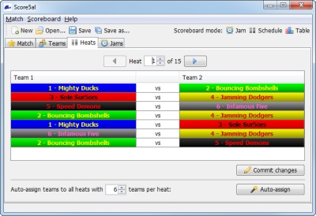
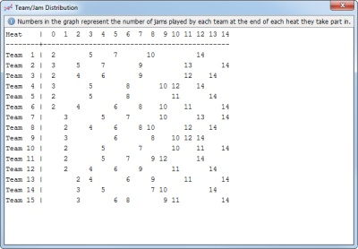

Heats Tab
The main window's Heats tab is used to set up the match schedule by assigning teams to the jams in each heat. You can either set up the schedule manually, or Score5al can do it for you automatically.

Score5al's heat-editing tab
Manual assignment
If you want to set up your match schedule manually, simply select the heat you want to edit using the controls at the top of the Heats panel, and then assign the teams in each jam by clicking the team names in the table. Once you have finished, you should click the "Commit changes" button to save your changes; note that selecting another heat will discard any uncommitted changes.
Automatic assignment
To automatically generate a match schedule, use the controls at the bottom of the Heats panel to select the maximum number of teams in a heat, and then press the "auto-assign" button. This will regenerate the entire match schedule - i.e. the teams will be reassigned in all jams in all heats.
The auto-assignment function attempts to generate a perfect distribution where all teams play each other an equal number of times, whilst also spacing teams out as evenly as possible (so one team doesn't play too many jams at once). Depending on your match configuration, this may or may not be possible; Score5al will keep trying for up to 60 seconds to create a perfect distribution before giving up. It may take several attempts before a perfect distribution is found. In general, the lower the number of teams per heat, the harder it is to generate a perfect distribution.
Team Distribution
As described above, an ideal Sur5al match schedule should ensure that all teams play each other the same number of times, and that each team's jams are spread as evenly as possible throughout the match. To help visualise this, you can show a distribution table by selecting the "Show Distribution" option from the "Match" menu.

Score5al's team distribution dialogue
The numbers in the table represent the total number of jams played by each team at the end of each heat. A number is only displayed if a team participates in a heat. This allows you to visualise the gaps in each team's involvement in the heat schedule, as well as the number of jams they have played at any given stage relative to the other teams. Ideally, each team's involvement in the match should be spread out as evenly as possible from start to finish.